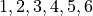
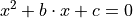

Sejal’s Sadistic Statistics#
Warning
You are about to have a dangerous amount of fun.
Instructions#
Sejal has invited you to attend the annual Ghimire Statistics Gala. Unfortunately, you cannot think of a good enough excuse on the spot to get out of going, so you have to attend. As part of the celebration, you are required to solve the following problems. Luckily, you brought your handy-dandy homework notebook, so be sure to complete the problems in there.
Problems#
Statistics#
TODO
Regression#
TODO
Probability#
Double Sided Coins
Sejal places three coins into her magical probability box. Two of the coins are normal coins. The third coin is a double-sided coin with two heads. Sejal forces you to choose one of the coins at random and without looking at which coin you have chosen, flip it. If the coin lands on heads, what is the probability you have selected the double-sided coin?
Colored Balls
Sejal empties her magical probability box and readies it for the next experiment. In this experiment, the box contains a yellow ball, an orange ball, a green ball, and a blue ball. You are forced to randomly selects 4 balls from the box with replacement. What is the expected value for the number of distinct colored balls you will select?
Sejal’s Folly
Sejal, now bored with her magical probability box, haphazardly discards it and decides everyone will have more fun if they play a game. Sejal’s Folly is a gambling game often played at the Ghimire Statistics Gala. Each player may bet on any of the numbers . Three dice are then rolled. If the player’s number appears on one, two or three of the dice, he or she receives respectively, one, two or three times their original bet, plus their original money back. Otherwise, the bet is lost. What is the player’s expected loss per bet?
Craps
After the folly of Sejal’s Folly, Sejal decides to play a more traditional game with everyone, Craps. The rules for Craps are as follows: Two die are rolled and the sum of the outcomes is calculated for each roll. The player rolls the dice and wins at once if the sum for the first throw is 7 or 11. The player loses at once if the sum is 2, 3 or 12. Any other roll is called the point. If the first throw is a point, the player rolls the dice repeatedly until either winning by rolling the point again, or loses by rolling a 7. What is your probability of winning at Sejal’s Craps table?
Counterfeits
What luck! You won $10000 playing Craps! But now Sejal owes you $10000! Because you are good friends, you let her pay you back over time and devise a payment plan, where Sejal will pay you $100 a month for the next 100 months. Sejal, however, decides to cheat you out of your winnings by paying entirely in one dollar bills and inserting a single counterfeit bill into each payment (i.e. $99 is real and $1 is fake). Considering your long and storied history with Sejal, you immediately suspect deception. You randomly select a single dollar from each payment and subject it to rigorous counterfeit testing. If your counterfeit testing procedure works 100% of the time, what is the probability you will discover a counterfeit bill before Sejal completes her payments?
The Hat Game
Sejal puts a stop to the gambling, lest she lose more money. Instead, she decides everyone should play a more festive game. Three attendees of the Sejal’s Statistics Gala students are seated in a circle and made to play this fun probability game. Sejal flips a coin for each person and based on the outcome of the flip, places either a red or blue hat on each students’ head. No communication of any sort is allowed between the the contestants, except for an initial strategy session before the game begins. During this strategy session, they are not allowed to ask what color hat they are wearing. Once the strategy session is over, the players must simultaneously guess the color of their own hats or pass. What group strategy should they adopt to maximize the probability that atleast one person guesses correctly and no-one guesses incorrectly?
The naive strategy would be for the group to agree that one person should guess and the others pass. This would have probability 1/2 of success. Find a strategy with a greater chance for success. What is the probability of success with your strategy?
Hint
This is a famous probability problem from a column entitled Why Mathematicians Now Care About Their Hat Color, New York Times, Science Times, D5, April 10, 2001.
Hint
What are the possible sequences of hat colors?
Quadratic Equations
To conclude the annual Ghimire Statistics Gala, Sejal goes back to the basics and rolls out a chalkboard. She writes on the chalkboard the following equation,

Then, Sejal rolls two die. The outcome of the first die roll is substituted into the above equation for  . The outcome of the second die roll is substituted into the above equation for
. The outcome of the second die roll is substituted into the above equation for  . What is the probability this equation has a real root?
. What is the probability this equation has a real root?